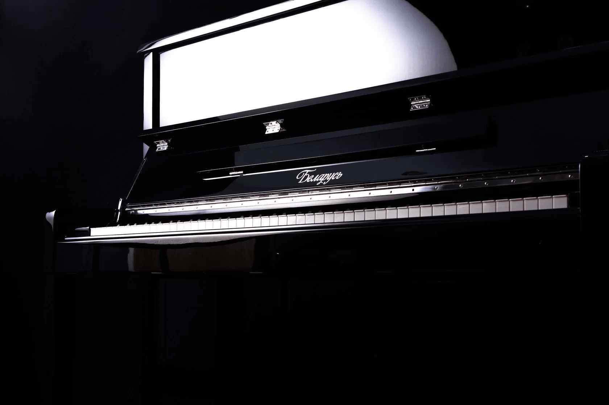

Фабрика фортепиано
Борисовская фабрика обеспечивала клавишными инструментами половину Советского Союза, был организован экспорт более чем в двадцати странах мира. В 2018 году коллективом «Фабрика фортепиано» в г. Минске налажено производство усовершенствованного инструмента. Новое пианино «Беларусь» на порядок выше по своим качественным характеристикам, чем советское. Это музыкальный инструмент ручной сборки! На производстве работают специалисты посвятившие десятилетия своей жизни работе с фортепиано. Акустическое пианино – это сложнейший механизм, состоящий из нескольких тысяч элементов. При разработке пианино Беларусь нового образца был использован мировой опыт производства музыкальных инструментов, изучались модельные ряды инструментов фабрик из разных стран мира, выбирали поставщиков качественных частей и материалов. Фортепиано «Беларусь» комплектуется отборными материалами, деталями и частями, которые фабрика закупает у лучших производителей из разных стран. Сборкой занимаются мастера с огромным профессиональным опытом.
Сегодня вы можете купить пианино «Беларусь» в России у официального предствителя. Мы стремимся обеспечить образовательные учреждения в сфере культуры: школы искусств, училища, детские музыкальные школы качественными инструментами и оборудованием.

О нас
«Доминанта Мьюзик» - это крупный интернет-магазин музыкальных инструментов и сеть офлайн-магазинов в России. Компания была основана в 2007 году. За годы работы у нас сложились партнерские отношения с ведущими производителями, и сегодня мы предлагаем высококачественную продукцию по конкурентоспособным ценам.
Компания ООО «Доминанта Мьюзик» является официальным представителем «Фабрики фортепиано» на территории РФ. В качестве официального дистрибьютора, мы гарантируем подлинность и качество каждого инструмента. Все продаваемые товары сертифицированы и обеспечены гарантией фирмы-производителя.
Акустическое пианино «Беларусь» зарекомендовало себя с наилучшей стороны и быстро получило признание у преподавателей и учащихся музыкальных школ. Если вы цените классику, рекомендуем приобрести его для домашнего обучения.
Фортепиано Беларусь соответствует требованиям 44-ФЗ, 223-ФЗ и национальному проекту «Культура». Приобретение музыкальных инструментов детскими школами и училищами искусств по нацпроекту «Культура» производится в рамках законодательства Российской Федерации о закупках с соблюдением соответствующих процедур.
Оставьте заявку на тендер
Доставка и оплата
Доставим пианино или рояль в любой регион России. Доставка осуществляется курьерскими и транспортными компаниями: СДЭК, ПЭК, Почта России, EMS (курьерская доставка Почты России), DpD (SpSR), Деловые линии. Стоимость и сроки доставки рассчитываются индивидуально, зависят от выбора транспортной компании и других условий.
Для физических лиц предусмотрена оплата наложенным платежом при получении. Для юридических лиц предусмотрен безналичный расчет с предоставлением всех необходимых документов.
У нас вы можете приобрести товар в рассрочку на 6 месяцев или кредит до 3 лет.
В комплекте с упакованным и настроенным для транспортировки инструментом вы получите гарантийный талон и руководство по эксплуатации музыкального инструмента. Руководство можете скачать нажатием на ссылку. Настоятельно рекомендуем ознакомиться с этой информацией до начала использования инструмента.
Первую настройку инструмента необходимо будет произвести сразу же после его установки в месте использования, т.к. при транспортировке регулировки и настройки могут быть нарушены. Пользуйтесь услугами профессиональных настройщиков. Категорически не рекомендуется располагать фортепиано рядом с отопительными батареями, окнами и дверями, расстояние до них должно составлять минимум 1,5 метра.